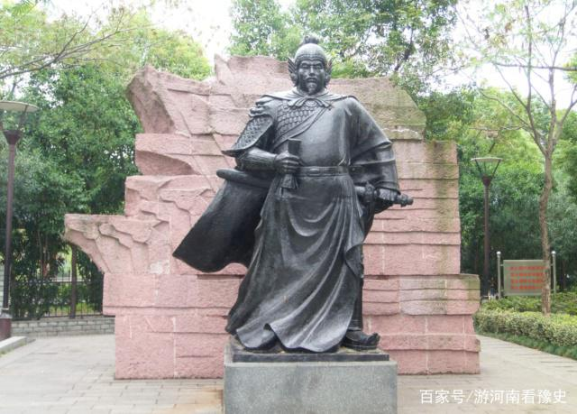
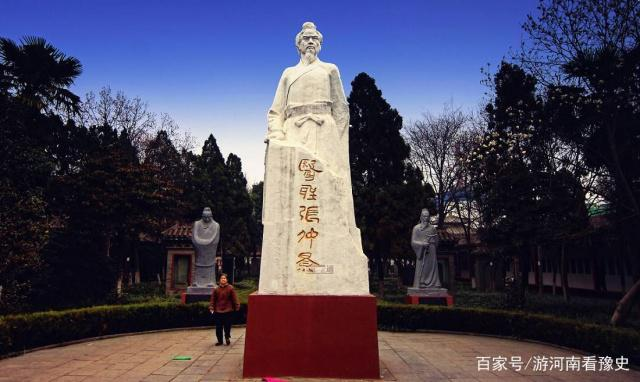
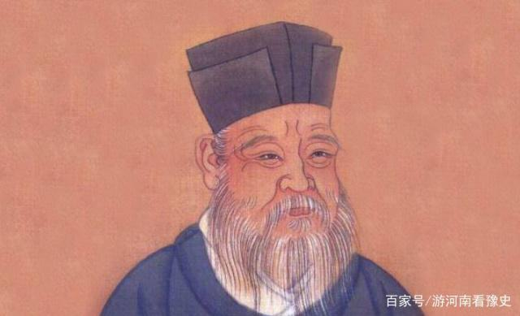
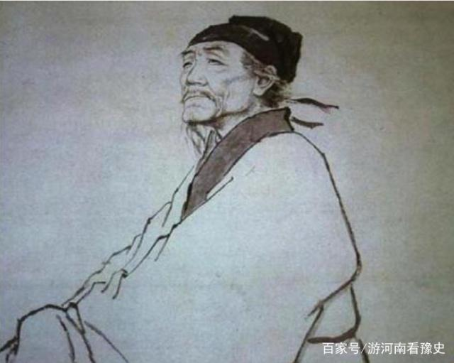
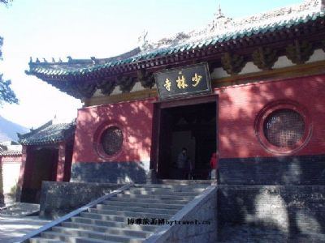
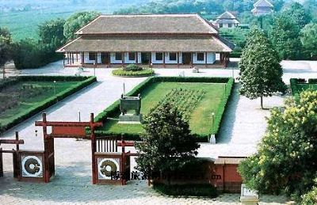
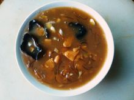
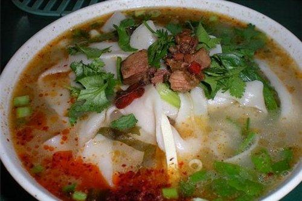
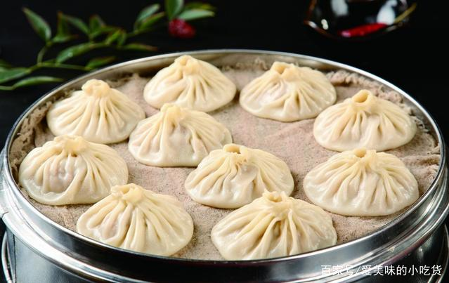
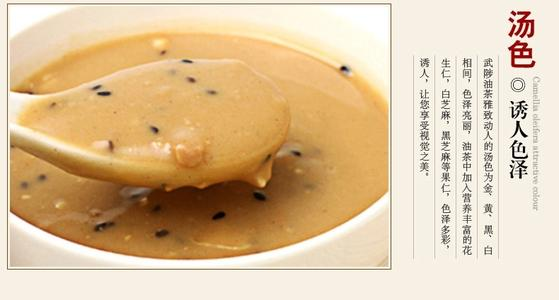

“历史著名人物”

岳飞是河南省汤阴人，是南宋时期杰出的将领是抗金名将。指挥的战争有数百次，连结河朔，积极与义军联络抗金；收复襄阳六郡，北伐中原。在二十岁时开始参军，并且一生四次参军。岳飞不仅在军事上有所成就，他还是一位书法家，诗人。代表词作《满江红·写怀》，是千古传诵的爱国名篇，后人辑有文集传世。岳飞戎马一生，英勇善战，文采飞扬。但是却被奸臣所害，被秦桧等人诬陷入狱，以莫须有的罪名被判刑遇。，直到宋孝时期，才被洗雪冤屈，推翻诬陷不实之词，恢复名誉，后又追谥忠武，封鄂王。

张仲景是河南省南阳县人，是我国的医圣，伟大的医学家，著有传世名作《伤寒杂病论》，对后世医学产生了巨大的影响。乱世出英雄，张仲景生活在一个动荡不安的时期。据史书记载，东汉桓帝时大疫三次，灵帝时大疫五次，献帝建安年间疫病流行更甚。数以万计的人被病魔吞噬，人口数量骤减，张仲景看到如此现象，痛心疾首，苦心研究伤寒杂病的对应方法，之后游历四方，用自己的医术，解除百姓疾苦。张仲景最后也是安然离世，没有遭受太多疾苦。

李斯是河南省驻马店上蔡县人，秦朝的丞相，是使秦朝统一天下的集大成者。他对我国经济、政治、公共事业、文化方面，都做出了巨大的成就。统一度量衡，。为了有效地统一制式、划一器具，李斯又从制度上和法律上采取措施，以保证度量衡的精确实施；统一货币，将六国货币在中国范围内进行统一，方便各地区经济贸易往来，对我国当时的经济进步产生了巨大影响；废除分封制，建立郡县制；统一车轨，以咸阳为中心修建车轨，将全国连接在一起；焚书坑儒，统一官方文字，加强中央集权。李斯为我国做出了巨大的贡献，但结局却令人唏嘘，被斩腰而死，并且牵连三族。

杜甫是河南巩县人，是我国伟大的诗人，被称之为诗圣，和李白并称为“大李杜。”是唐代的现实主义文学家，唐代艺术思想的集大成者。他一生颠沛流离，尝尽世间痛苦，但也是由于大唐这个由盛而衰的时期成就了杜甫，也是他艺术生涯中的一大幸事。诗中多描写现实和人间疾苦，中心往往与政治有关。杜甫的诗之所以被称为“诗史”，是因为他的是内容深广，意境雄浑，感情深沉，心系国家安危，关心民生。杜甫在书法方面也有所成就，而他的“书贵瘦硬”说更是奠定了杜甫在书法理论史上的重要地位。老年时期杜甫生活困难，不能北归，最后死于河流的小舟之上。
“旅游胜地”

少林寺，位于登封县城西北13公里少室山北麓五乳峰下。若从郑州、开封、洛阳乘汽车，可直达寺院门前。少林寺创建于北魏太和二十年（496年），因此寺建于少室山麓的丛林茂密之处，故名“少林”。正如《说嵩》中所说：“少林者，少室之林”。少林寺是我国佛教禅宗的发样地，所以又称《少林禅寺》和《大少林》．据文献记载，北魏太和十九年（495年）印度高僧跋陀自西域跋涉来洛阳，他0幽栖，常到嵩山，又受孝文帝尊崇，“诏于少室山阴，筑少林寺而居之”。北魏正光至孝昌年间，另一印度僧人达摩来中国，修禅于嵩山少林寺。他广集弟子，传授禅宗，使少林寺的影响日益扩大，传说达摩曾在山中面壁九年，因此留影于石。少林寺原有建筑较多，分布较广。现在少林寺包罗的范围除主体建筑常住院外，还有离寺西不远的塔林，寺西北阜地上的初祖庵，少溪河南岸的南园，钵盂峰下的二祖庵，寺东太室山麓的三祖庵，以及分散在寺周围的古塔、碑刻等。

殷墟博物苑位于安阳市西北郊小屯村，因其坐落在“殷墟宫殿区”而得命名。殷墟博物苑为国家AAAA级景区，中国考古学的诞生地，中国最早的文字---甲骨文发祥地，是中宣部公布的全国百个爱国主义教育示范基地之一和首批全国旅游景区国家级青年文明号，属于历史遗址类型的全国重点文物保护单位。2006年7月13日，联合国教科文组织第30届世界文化遗产委员会通过列入《世界遗产名录》。殷墟博物苑“茅茨土阶”，“四阿重屋”式的殿宇高耸，朱墨雕彩；青铜礼器，古色古香；仿殷石雕，徐徐如生；花木扶疏，芳草萋萋。院内景色与苑东北的洹水河相映成趣，具有古代帝王宫殿的人文景观特征。殷墟博物院犹如一座展示华夏历史瑰宝的艺术殿堂，给人以古代文明的陶冶和启迪。游览殷墟博物苑，您可以领略博大精深的殷商文化，探寻中华民族文明史的渊源。殷墟宫殿区殷墟宫殿区驰名中外，为世界文明古国中最著名的“古典城邦”之一。
我们河南还有好多好看的地方哟！
“有趣的民俗文化”
河南坠子
河南坠子是一种比较独特的曲艺形式，俗称“坠子书”、“简板书”或“响板书”，因使用坠子弦（又名坠琴）伴奏而得名。它流行于河南等中原地区和华北的部分省市，约在清代道光年间形成。河南坠子使用河南方音说唱表演，以唱为主，唱中夹说,所用唱腔主要包括【平腔】、【快扎板】、【武板】、【五字坎】和【垛板】等。早期艺人均为男性，辛亥革命后，随着男女平等思想的不断深入人心，河南坠子表演开始出现了女性艺人。
洛神传说
在洛河两岸，流传着一个脍灸人口的洛神宓妃的故事。宓妃原是伏羲氏的女儿因迷恋洛河两岸的美丽景色，降临人间，来到洛河岸边。那时，居住在洛河流域的是一个勤劳勇敢的民族，有洛氏。宓妃便加入到有洛氏当中，并教会有洛氏百姓结网捕鱼，还把从父亲那儿学来的狩猎、养畜、放牧的好方法也教给了有洛氏的人们。这天，大伙儿劳动之余，宓妃拿起七弦琴，奏起优美动听的乐曲来。不巧，这悠扬的琴声被黄河里的河伯听到，这个浪荡公子便潜入洛河，看到宓妃，一下子就被宓妃的美貌所吸引。于是河伯化成一条白龙，在洛河里掀起轩然大波，吞没了宓妃。宓妃被河伯押入水府深宫，终日郁郁寡欢，只好用七弦琴排遣愁苦。这时，后羿来到了宓妃的身边。后羿原是位善射的天神，因射死了九个天帝的儿子，便与妻子一同贬到人间，后羿妻子嫦娥偷吃仙药，一人返回天宫，便只剩后羿独自留在人间。后羿听说了宓妃的遭遇，非常气愤，将宓妃解救出深宫，回到有洛氏中间，并与宓妃产生了爱情。那河伯本来就窝了一肚子火，听说了后羿宓妃之间的恋情，更是恼羞成怒。他化作一条白龙潜入洛河，吞噬了许多田地、村庄和牲畜，后羿怒火填膺，射中了河伯的左眼，河伯仓皇而逃。河伯自知不是后羿的对手，只好跑到天帝那儿去告状。天帝早就知道了所发生的一切，并不向着河伯说话，河伯这下只能灰溜溜地回到水府，再也不敢管后羿与宓妃的事了。从此，后羿与宓妃这对情侣便在洛阳居住下来，过上了美满幸福的生活。后来，为表彰他们，天帝还封后羿为宗布神，宓妃为洛神。洛河两岸的人于是在老城东关兴建了座宏伟的“洛神庙”。洛神宓妃的故事也就一代代传了下来。
未完待续
“人间美味”
胡辣汤

胡辣汤是洛阳小吃系列中的一绝。它源于宋代中叶，大兴于民国初年，之后花样不断翻新。至今你若行走在洛阳大街小巷口，随处都能见到它的身影。小小一碗胡辣汤，缘何会历久不衰呢？它以大众化的品位和低廉的价格，始终成为人们早餐时的首选。
烩面

烩面是河南特色美食 [3] ，它是一种荤、素、汤、菜、饭聚而有之的传统风味小吃，汤好面筋道，营养高，以味道鲜美，经济实惠，享誉中原，遍及全国。与北京的炸酱面、山西的刀削面、湖北的热干面、四川的担担面，同称为中国五大面食，享有盛誉。
开封灌汤包

开封灌汤包。灌汤包顾名思义就是馅儿里有汤的包子，在我看来开封灌汤包是一种高大上的美食，在北宋时它可是皇家食品，慢慢的才上了平常百姓家的餐桌，灌汤包的个头很均匀看着美观，里面的内容更是很别致，面皮薄薄的，肉馅儿里还有汤，这也是把吃面吃肉和喝汤的人的需求糅合在一块儿了，这种灌汤包让你看着就有食欲。
武陵油茶

武陵油茶。相传是在楚汉相争时刘邦受伤了，住在一户吕姓人家，这户人家用膏汤积壳茶给刘邦吃，仅仅三个月刘邦的伤就痊愈了，刘邦在当了皇帝以后，在长安就想起了他曾经吃过的这个汤，就把原来给他做这道汤的吕某召入宫中封为五品油茶大师，还把这个油茶叫御膳，武陵油茶的功效真的很不错，它能健脾健胃、润肺、提神，味道浓郁芳香可口的武陵油茶。，有空了一定要去尝一尝。